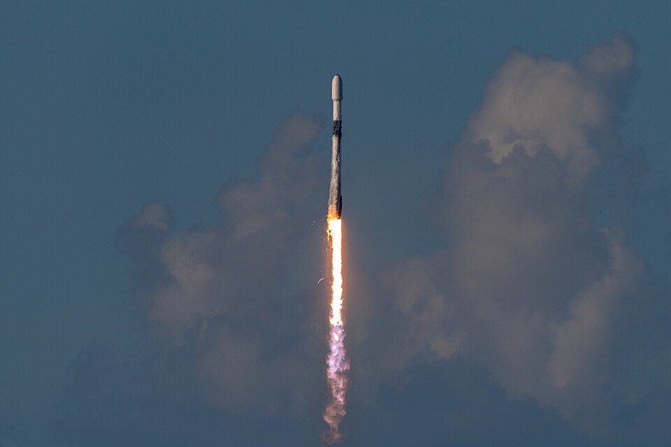
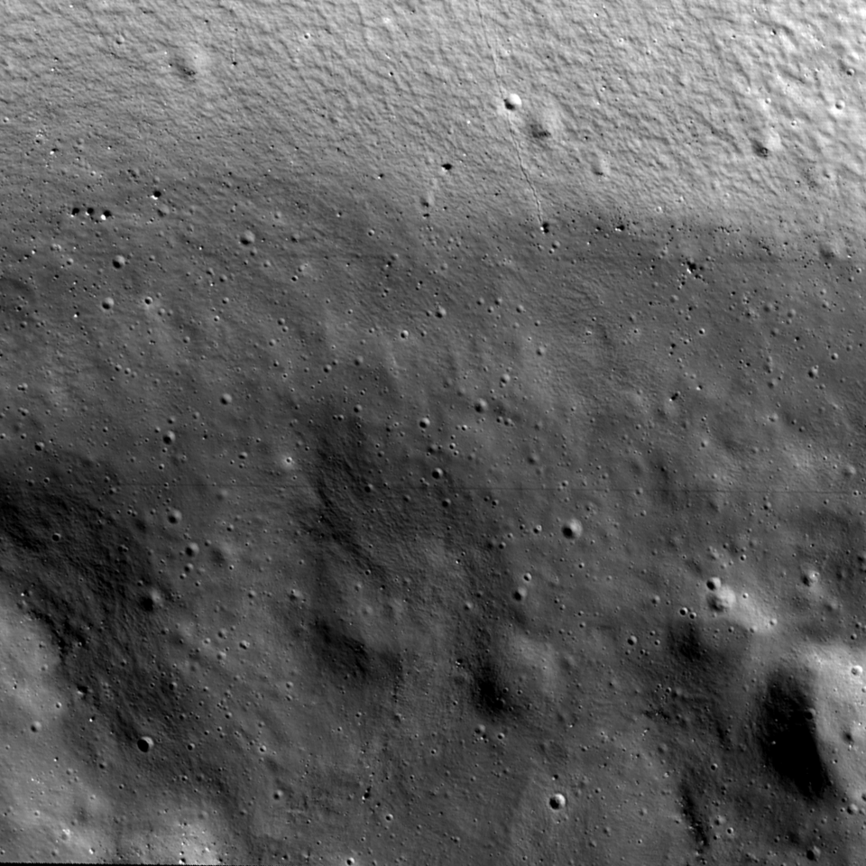
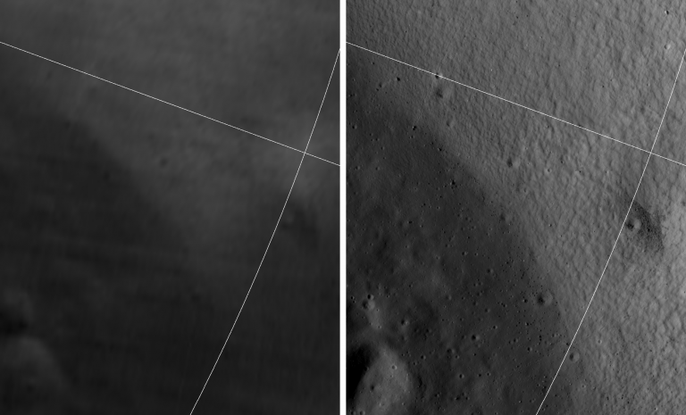

한국형 달 착륙선
우리 기술로 달에 내려앉는 첫 도전
KEY FIGURES핵심 숫자
1.8t급
달 착륙선 무게
5,303억 원
총사업비 (2024~2033)
2032년
발사 목표 (차세대발사체)
10일 이상
달 표면 임무 기간
ROADMAP단계별 계획
- [OK]1단계: 달 궤도선 다누리 발사 (2022)
- [OK]2단계 예비타당성조사 통과 (2023)
- [OK]개발 사업 협약, 착수 (2024)
- [..]착륙지 최종 선정 (2026년 말 예정)
- [..]연착륙 검증선 발사 (2032 상반기 목표)
- [..]달 착륙선 발사 (2032 하반기 목표)
BRIEFING개요
한국형 달 착륙선은 우주항공청이 주관하고 한국항공우주연구원이 개발하는 '달 탐사 2단계' 사업이다. 2023년 를 통과했고, 2024년 10월 협약을 맺어 본격적으로 개발을 시작했다. 1.8톤급 착륙선을 우리 기술로 만들어 달 표면에 시키고, 과학·기술 임무를 수행하는 것이 목표다. 착륙선은 스스로 장애물을 찾아 피하며 정밀하게 내려앉도록 개발된다.
1단계인 달 궤도선 는 2022년부터 달 상공을 돌며 관측하고 있다. 착륙선은 개발 중인 에 실려 2032년 발사될 예정이며, 상반기에 연착륙 검증선을, 하반기에 본 착륙선을 보낸다. 이와 별도로, 민간이 주도하는 소형 달 착륙선을 2030년 초에 먼저 보내는 사업도 추진되고 있다.
LANDING SITE착륙 후보지
- 위도 범위
- 북위·남위 40~70° (2026년 3월 공청회)
- 고른 이유
- 달 표면 임무 기간을 10일 이상 확보하고, 착륙선 운용과 과학 탐사가 비교적 안정적
- 후보 예시
- 북반구: 가트너·앤디미온 충돌구, 라쿠스 모티스
남반구: 클라비우스·핑그레·마기누스 충돌구 - 추가 분석
- 연착륙 검증선 9곳, 달 착륙선 20곳 검토 · 착륙선 1번 후보는 오에노피데스 분화구 (2026년 10월)
- 최종 선정
- 2026년 말 예정
SCIENCE MISSION주요 임무
- [01]달 표면 먼지와 우주환경이 어떻게 영향을 주고받는지 규명
- [02]표면의 화학 조성과 자원 탐색
- [03]지형·지질 분석
- [04]연착륙 검증선: 우주환경·먼지 환경 관측
- [05]달 착륙선: 광물·휘발성 물질·금속 등 자원 탐사
탑재체(과학 장비)는 착륙지와 함께 결정될 예정
PHASE 1 · DANURI1단계 다누리
- 발사
- 2022.08.04 23:08 UTC (한국 8월 5일), 미국 케이프커내버럴에서 팰컨 9로
- 무게
- 678kg (본체와 탑재체 6종)
- 탑재체
- 한국 장비 5종 + NASA
- 달 궤도 진입
- 2022년 12월 말, 한국은 7번째 달 탐사국이 됨
- 임무 연장
- 2027년까지 (2025년 2월 결정), 2028년 3월 달 표면 충돌로 마무리 예정
MISSION LOG주요 기록 (UTC)
- 달 궤도선 다누리 발사
- 다누리 달 임무 궤도 진입 성공 확인
- 달 탐사 2단계(달 착륙선) 예비타당성조사 통과, 총사업비 5,303억 원
- 우주항공청–한국항공우주연구원 사업 협약, 개발 착수
- 다누리 임무 기간 2027년까지 연장 결정
- 달 탐사 임무 수립 공청회: 착륙 지역 위도 40~70° 제시
- 소형 달 착륙선 사업, 예비타당성조사 대상 선정 (2030년 초 발사 목표)
- 착륙 후보지 분석 결과 공개 (검증선 9곳, 착륙선 20곳)
- 착륙지 최종 선정
- 연착륙 검증선 발사
- 한국형 달 착륙선 발사
날짜·시각은 세계 표준시(UTC) 기준 · 시각 옆 작은 글씨는 한국 시간(UTC+9) · 계획 일정은 2026년 10월 발표 기준이며 바뀔 수 있음
ARCHIVE PHOTOS기록 사진



REFERENCES참고 자료
- 한국형 달 착륙선 ↗위키백과 (한국어)
- Korea Lunar Lander and Rover ↗위키백과 (영어)
- 달 탐사 2단계 예비타당성조사 통과 (2023) ↗경기일보
- 우주청-항우연 달 탐사 2단계 사업 협약 (2024.11.04) ↗뉴시스
- "2032년 달 착륙 추진"…착륙지 '위도 40~70도' 제시 (2026.03.25) ↗아시아경제
- 민간 주도로 2030년 달 착륙선 보낸다 (2026.04.05) ↗머니투데이
- 착륙 후보 1번은 오에노피데스 분화구 (2026.10.31) ↗중도일보
- 다누리, 달 궤도 진입 최종 성공 확인 (2022.12.28) ↗뉴시스
- 우주청, 다누리 임무 기간 2027년까지 추가 연장 (2025.02.10) ↗뉴시스
- Danuri ↗위키백과 (영어)
사진 출처는 각 사진 아래에 표시 · 수치와 날짜는 정부 발표와 언론 보도를 바탕으로 했으며, 자료에 따라 조금씩 다를 수 있음